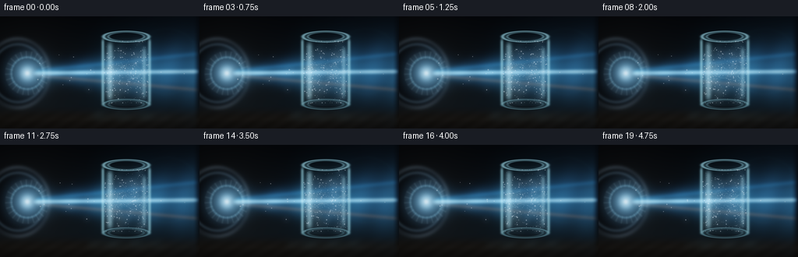
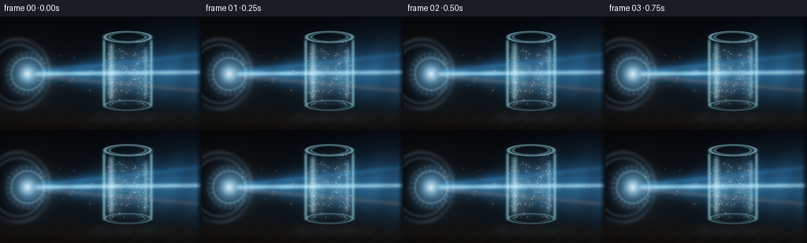
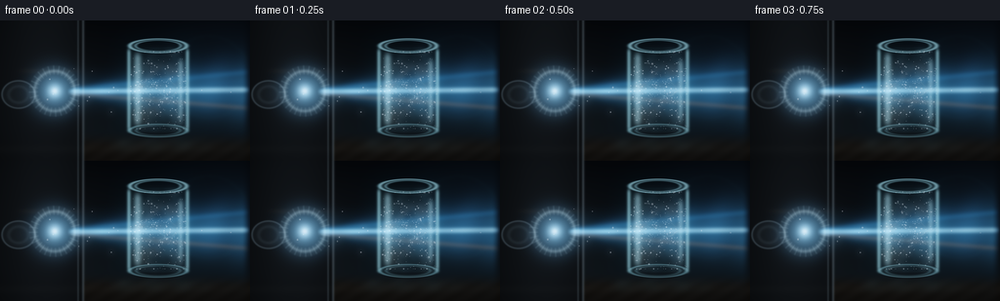
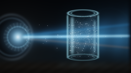
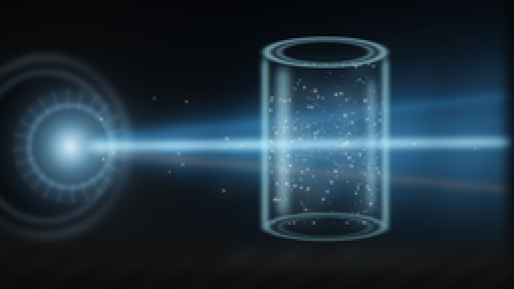
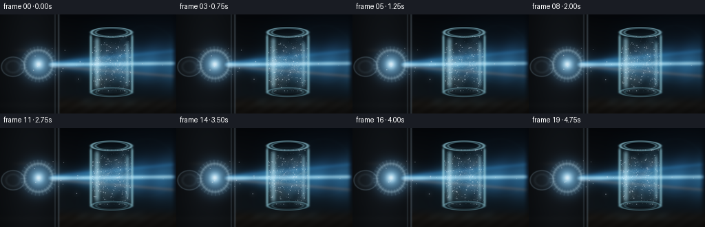
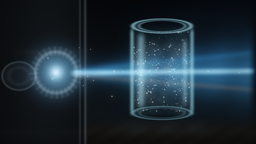

CODING AGENTS AS PIXEL WORLD MODELS
traex/DeepSeek-V4.1-Flash · phygen_048
点击播放 · 原生 RGB 像素
逐轮保存的候选
回放视频、检查图与代码变化。
每份候选均可单独播放。实际图片检查记录在下方工具轨迹中。
候选 01播放与检查图
点击播放 · 原生 RGB 像素


展开代码变化
--- 上一保存版本
+++ 本次保存版本
@@ -0,0 +1,400 @@
+from pathlib import Path
+import math
+
+import numpy as np
+from PIL import Image, ImageDraw, ImageFilter
+
+import artifact_io
+
+
+CASE_DIR = Path(__file__).resolve().parent
+W, H = 256, 144
+S = 4
+WS, HS = W * S, H * S
+FPS = 4
+NFRAMES = 20
+
+
+def smoothstep(edge0, edge1, x):
+ t = np.clip((x - edge0) / (edge1 - edge0), 0.0, 1.0)
+ return t * t * (3.0 - 2.0 * t)
+
+
+def gaussian(x, sigma):
+ return np.exp(-0.5 * (x / sigma) ** 2)
+
+
+def ellipse_distance(px, py, cx, cy, rx, ry):
+ return np.sqrt(((px - cx) / rx) ** 2 + ((py - cy) / ry) ** 2)
+
+
+def soft_ellipse(px, py, cx, cy, rx, ry, feather=1.0):
+ d = ellipse_distance(px, py, cx, cy, rx, ry)
+ return 1.0 - smoothstep(1.0 - feather, 1.0 + feather, d)
+
+
+def blur_rgb(image, radius):
+ arr = np.clip(image * 255.0, 0.0, 255.0).astype(np.uint8)
+ out = Image.fromarray(arr, "RGB").filter(ImageFilter.GaussianBlur(radius))
+ return np.asarray(out, dtype=np.float32) / 255.0
+
+
+def overlay_add(image, overlay, gain=1.0):
+ rgba = np.asarray(overlay, dtype=np.float32) / 255.0
+ image += rgba[..., :3] * rgba[..., 3:4] * gain
+
+
+def draw_polyline(draw, points, fill, width):
+ scaled = [(float(x * S), float(y * S)) for x, y in points]
+ draw.line(scaled, fill=fill, width=max(1, int(round(width * S))), joint="curve")
+
+
+def make_particles():
+ rng = np.random.default_rng(48048)
+
+ # The interior motes are biased toward the beam, with a smaller ambient
+ # population that keeps the jar feeling like a volume rather than a decal.
+ count = 310
+ x0 = rng.uniform(134.0, 191.0, count)
+ y0 = np.clip(rng.normal(73.0, 23.0, count), 31.0, 112.0)
+ phase = rng.uniform(0.0, math.tau, count)
+ freq = rng.uniform(0.45, 1.45, count)
+ size = 0.35 + 1.45 * rng.random(count) ** 3
+ brightness = 0.28 + 0.72 * rng.random(count) ** 1.6
+ warm = rng.random(count) < 0.24
+ drift_x = rng.normal(0.0, 0.35, count)
+ drift_y = rng.normal(0.0, 0.25, count)
+
+ # A few larger foreground motes provide depth and catch a warm edge.
+ big_count = 26
+ big_x = rng.uniform(49.0, 239.0, big_count)
+ big_y = 73.0 + rng.normal(0.0, 17.0, big_count)
+ big_phase = rng.uniform(0.0, math.tau, big_count)
+ big_freq = rng.uniform(0.35, 0.9, big_count)
+ big_size = rng.uniform(0.8, 1.65, big_count)
+ big_brightness = rng.uniform(0.2, 0.75, big_count)
+
+ return {
+ "x0": x0, "y0": y0, "phase": phase, "freq": freq, "size": size,
+ "brightness": brightness, "warm": warm, "drift_x": drift_x,
+ "drift_y": drift_y, "big_x": big_x, "big_y": big_y,
+ "big_phase": big_phase, "big_freq": big_freq, "big_size": big_size,
+ "big_brightness": big_brightness,
+ }
+
+
+PARTICLES = make_particles()
+
+
+def background(px, py):
+ ny = py / H
+ image = np.empty((HS, WS, 3), dtype=np.float32)
+ image[..., 0] = 0.010 + 0.035 * ny
+ image[..., 1] = 0.016 + 0.052 * ny
+ image[..., 2] = 0.025 + 0.060 * ny
+
+ # A soft, cool ambience on the right and a warm pocket near the lamp.
+ left_glow = np.exp(-0.5 * (((px - 25.0) / 48.0) ** 2 + ((py - 76.0) / 58.0) ** 2))
+ right_glow = np.exp(-0.5 * (((px - 235.0) / 58.0) ** 2 + ((py - 35.0) / 44.0) ** 2))
+ image += left_glow[..., None] * np.array([0.030, 0.025, 0.018], dtype=np.float32)
+ image += right_glow[..., None] * np.array([0.012, 0.022, 0.034], dtype=np.float32)
+
+ # Dark work surface and a faint reflected light band.
+ surface = smoothstep(113.0, 132.0, py)
+ surface_color = np.empty_like(image)
+ surface_color[..., 0] = 0.045 + 0.020 * np.exp(-0.5 * ((py - 126.0) / 10.0) ** 2)
+ surface_color[..., 1] = 0.040 + 0.016 * np.exp(-0.5 * ((py - 126.0) / 10.0) ** 2)
+ surface_color[..., 2] = 0.034 + 0.012 * np.exp(-0.5 * ((py - 126.0) / 10.0) ** 2)
+ surface_color += (0.010 * np.sin(px * 0.13 + py * 0.21) ** 2)[..., None]
+ image = image * (1.0 - surface[..., None]) + surface_color * surface[..., None]
+
+ # A quiet out-of-focus ring behind the jar.
+ ring_d = np.sqrt(((px - 214.0) / 42.0) ** 2 + ((py - 58.0) / 42.0) ** 2)
+ ring = gaussian(ring_d - 1.0, 0.035) * 0.025
+ image += ring[..., None] * np.array([0.10, 0.22, 0.25], dtype=np.float32)
+ return image
+
+
+def add_headlight(image, px, py, time_s):
+ cx, cy = 23.0, 73.0
+ dx = px - cx
+ dy = py - cy
+ d = np.sqrt((dx / 43.0) ** 2 + (dy / 47.0) ** 2)
+
+ body = 1.0 - smoothstep(0.93, 1.02, d)
+ housing_color = np.empty_like(image)
+ housing_color[..., 0] = 0.018 + 0.020 * np.exp(-0.5 * ((px - 36.0) / 18.0) ** 2)
+ housing_color[..., 1] = 0.025 + 0.022 * np.exp(-0.5 * ((px - 36.0) / 18.0) ** 2)
+ housing_color[..., 2] = 0.033 + 0.025 * np.exp(-0.5 * ((px - 36.0) / 18.0) ** 2)
+ image = image * (1.0 - 0.88 * body[..., None]) + housing_color * (0.88 * body[..., None])
+
+ angle = np.arctan2(dy, dx)
+ rim = gaussian(d - 0.94, 0.045)
+ rim2 = gaussian(d - 0.79, 0.035)
+ rim_light = (0.18 + 0.16 * np.cos(angle * 2.0 + 0.4) ** 2)
+ image += rim[..., None] * rim_light[..., None] * np.array([0.32, 0.38, 0.42], dtype=np.float32)
+ image += rim2[..., None] * np.array([0.08, 0.11, 0.13], dtype=np.float32)
+
+ # Concentric reflector and lens, centered slightly right of the housing.
+ lx, ly = 35.0, 73.0
+ ldx = px - lx
+ ldy = py - ly
+ lens_d = np.sqrt(ldx ** 2 + ldy ** 2)
+ lens_angle = np.arctan2(ldy, ldx)
+ lens_mask = 1.0 - smoothstep(19.0, 21.5, lens_d)
+ reflector = (1.0 - smoothstep(27.0, 30.0, lens_d)) * smoothstep(17.5, 20.0, lens_d)
+ spoke = 0.35 + 0.65 * np.cos(lens_angle * 12.0 + 0.6) ** 6
+ image += reflector[..., None] * (spoke * 0.16)[..., None] * np.array([0.45, 0.58, 0.62], dtype=np.float32)
+
+ flicker = 0.97 + 0.025 * math.sin(time_s * 8.2) + 0.012 * math.sin(time_s * 17.0 + 0.8)
+ lens_core = gaussian(lens_d, 5.2) * flicker
+ lens_halo = gaussian(lens_d, 15.0) * flicker
+ image += lens_halo[..., None] * np.array([0.30, 0.55, 0.72], dtype=np.float32)
+ image += (lens_core * lens_mask)[..., None] * np.array([0.85, 1.25, 1.55], dtype=np.float32)
+ image += (gaussian(lens_d, 1.8) * lens_mask)[..., None] * np.array([0.75, 1.0, 1.15], dtype=np.float32)
+
+ # A thin chrome lip catches a second, warmer light.
+ lip = gaussian(lens_d - 20.5, 1.1)
+ image += lip[..., None] * np.array([0.10, 0.18, 0.22], dtype=np.float32)
+ return image
+
+
+def add_beam(image, px, py, time_s):
+ start = 41.0
+ axis_y = 73.0 - 0.010 * (px - start)
+ half = 3.0 + 0.135 * np.maximum(px - start, 0.0)
+ dy = py - axis_y
+ along = smoothstep(start - 1.0, start + 10.0, px) * (1.0 - smoothstep(247.0, 257.0, px))
+
+ wave = 0.90 + 0.10 * np.sin(px * 0.17 - time_s * 1.3 + py * 0.035)
+ core = gaussian(dy, 1.9) * along * wave
+ volume = gaussian(dy, half * 0.78) * along * wave
+ haze = gaussian(dy, half * 1.8) * along * 0.24
+
+ image += volume[..., None] * np.array([0.10, 0.31, 0.48], dtype=np.float32)
+ image += core[..., None] * np.array([0.55, 0.86, 1.05], dtype=np.float32)
+ image += haze[..., None] * np.array([0.035, 0.090, 0.125], dtype=np.float32)
+
+ # Subtle spectral fringes make the cone feel like it is passing through
+ # glass rather than being a flat white triangle.
+ cyan_edge = gaussian(dy + half * 0.72, 2.2) * along
+ amber_edge = gaussian(dy - half * 0.74, 2.0) * along
+ image += cyan_edge[..., None] * np.array([0.020, 0.090, 0.160], dtype=np.float32)
+ image += amber_edge[..., None] * np.array([0.120, 0.065, 0.018], dtype=np.float32)
+ return image
+
+
+def jar_masks(px, py):
+ cx, cy = 162.0, 71.0
+ rx, ry = 31.0, 46.0
+ q = (np.abs((px - cx) / rx) ** 8 + np.abs((py - cy) / ry) ** 8) ** (1.0 / 8.0)
+ body = 1.0 - smoothstep(0.982, 1.018, q)
+ inner = 1.0 - smoothstep(0.925, 0.965, q)
+ top_d = ellipse_distance(px, py, cx, 26.0, 29.0, 7.0)
+ bottom_d = ellipse_distance(px, py, cx, 113.0, 29.0, 6.5)
+ top_ring = gaussian(top_d - 1.0, 0.055) + 0.55 * gaussian(top_d - 0.80, 0.045)
+ bottom_ring = gaussian(bottom_d - 1.0, 0.055) + 0.45 * gaussian(bottom_d - 0.78, 0.05)
+ side = (gaussian(px - 132.0, 1.3) + gaussian(px - 192.0, 1.3))
+ side *= smoothstep(26.0, 34.0, py) * (1.0 - smoothstep(108.0, 117.0, py))
+ highlight = gaussian(px - 141.0, 2.5) * smoothstep(30.0, 40.0, py) * (1.0 - smoothstep(100.0, 112.0, py))
+ highlight += 0.65 * gaussian(px - 185.0, 1.8) * smoothstep(36.0, 46.0, py) * (1.0 - smoothstep(95.0, 110.0, py))
+ return body, inner, top_ring, bottom_ring, side, highlight
+
+
+def add_jar_back(image, px, py):
+ body, inner, top_ring, bottom_ring, side, highlight = jar_masks(px, py)
+ tint = np.empty_like(image)
+ tint[..., 0] = 0.055
+ tint[..., 1] = 0.085
+ tint[..., 2] = 0.090
+ image = image * (1.0 - 0.13 * body[..., None]) + tint * (0.13 * body[..., None])
+ image += (inner * 0.035)[..., None] * np.array([0.16, 0.32, 0.38], dtype=np.float32)
+ image += (top_ring * 0.65)[..., None] * np.array([0.50, 0.78, 0.84], dtype=np.float32)
+ image += (bottom_ring * 0.38)[..., None] * np.array([0.34, 0.58, 0.63], dtype=np.float32)
+ image += (side * 0.30)[..., None] * np.array([0.55, 0.85, 0.90], dtype=np.float32)
+ image += (highlight * 0.20)[..., None] * np.array([0.55, 0.85, 0.90], dtype=np.float32)
+ return image
+
+
+def particle_overlays(time_s):
+ p = PARTICLES
+ t = time_s
+ x = p["x0"] + 1.5 * np.sin(p["phase"] + t * p["freq"] * 1.1) + p["drift_x"] * t
+ y = p["y0"] + 1.8 * np.sin(p["phase"] * 1.4 + t * p["freq"] * 0.85) + p["drift_y"] * t
+ x = np.clip(x, 134.0, 191.0)
+ y = np.clip(y, 32.0, 111.0)
+
+ bx = p["big_x"] + 2.1 * np.sin(p["big_phase"] + t * p["big_freq"])
+ by = p["big_y"] + 1.4 * np.sin(p["big_phase"] * 1.7 + t * p["big_freq"] * 0.8)
+
+ glow = Image.new("RGBA", (WS, HS), (0, 0, 0, 0))
+ core = Image.new("RGBA", (WS, HS), (0, 0, 0, 0))
+ draw_glow = ImageDraw.Draw(glow)
+ draw_core = ImageDraw.Draw(core)
+
+ for i in range(len(x)):
+ beam_distance = abs(y[i] - 73.0)
+ beam_boost = 0.35 + 0.65 * math.exp(-0.5 * (beam_distance / 16.0) ** 2)
+ alpha = int(np.clip(28 + 95 * p["brightness"][i] * beam_boost, 20, 145))
+ radius = max(1.0, float(p["size"][i] * S))
+ cx = float(x[i] * S)
+ cy = float(y[i] * S)
+ if p["warm"][i]:
+ color = (255, 194, 118, alpha)
+ else:
+ color = (168, 225, 255, alpha)
+ draw_glow.ellipse((cx - radius * 2.6, cy - radius * 2.6,
+ cx + radius * 2.6, cy + radius * 2.6), fill=color)
+ draw_core.ellipse((cx - radius * 0.42, cy - radius * 0.42,
+ cx + radius * 0.42, cy + radius * 0.42),
+ fill=(235, 248, 255, min(255, alpha + 65)))
+
+ for i in range(len(bx)):
+ radius = max(1.0, float(p["big_size"][i] * S))
+ alpha = int(np.clip(18 + 56 * p["big_brightness"][i], 14, 92))
+ cx = float(bx[i] * S)
+ cy = float(by[i] * S)
+ color = (204, 234, 255, alpha)
+ draw_glow.ellipse((cx - radius * 3.0, cy - radius * 3.0,
+ cx + radius * 3.0, cy + radius * 3.0), fill=color)
+ draw_core.ellipse((cx - radius * 0.48, cy - radius * 0.48,
+ cx + radius * 0.48, cy + radius * 0.48),
+ fill=(250, 252, 255, min(220, alpha + 60)))
+
+ glow = glow.filter(ImageFilter.GaussianBlur(4.0 * S))
+ return glow, core
+
+
+def add_caustics(image, px, py, time_s):
+ body, inner, _, _, _, _ = jar_masks(px, py)
+ beam = gaussian(py - (73.0 - 0.010 * (px - 41.0)), 23.0)
+ cloud = (0.50 + 0.22 * np.sin(px * 0.13 + py * 0.17 + time_s * 0.8)
+ + 0.16 * np.sin(px * 0.21 - py * 0.11 - time_s * 1.1)
+ + 0.12 * np.sin(px * 0.31 + py * 0.24 + 1.7))
+ cloud = np.clip(cloud, 0.0, 1.0)
+ image += (inner * beam * cloud * 0.075)[..., None] * np.array([0.18, 0.44, 0.52], dtype=np.float32)
+
+ fine = Image.new("RGBA", (WS, HS), (0, 0, 0, 0))
+ wide = Image.new("RGBA", (WS, HS), (0, 0, 0, 0))
+ draw_fine = ImageDraw.Draw(fine)
+ draw_wide = ImageDraw.Draw(wide)
+
+ # Curved caustic filaments fan out from the entry face of the jar.
+ for k in range(8):
+ points = []
+ phase = time_s * (0.55 + k * 0.035) + k * 0.83
+ for j in range(31):
+ u = j / 30.0
+ xx = 135.0 + 56.0 * u
+ yy = 72.0 + (k - 3.5) * 3.0 + 5.5 * math.sin(u * 7.0 + phase) * u
+ yy += 1.4 * math.sin(u * 19.0 - phase * 1.3)
+ points.append((xx, yy))
+ if k in (1, 3, 5):
+ color = (255, 194, 112, 82)
+ else:
+ color = (128, 224, 255, 96)
+ draw_polyline(draw_wide, points, (color[0], color[1], color[2], 38), 1.8)
+ draw_polyline(draw_fine, points, color, 0.42)
+
+ # Short diffraction needles within the brightest part of the beam.
+ for k in range(11):
+ phase = time_s * 0.7 + k * 0.61
+ x0 = 145.0 + 10.0 * math.sin(phase * 0.8 + k)
+ y0 = 72.5 + 4.0 * math.sin(phase + k * 1.7)
+ length = 13.0 + 7.0 * (0.5 + 0.5 * math.sin(phase * 1.2))
+ angle = -0.45 + 0.9 * (k / 10.0) + 0.08 * math.sin(phase)
+ x1 = x0 + length * math.cos(angle)
+ y1 = y0 + length * math.sin(angle)
+ draw_polyline(draw_fine, [(x0, y0), (x1, y1)], (185, 236, 255, 90), 0.30)
+
+ wide = wide.filter(ImageFilter.GaussianBlur(2.8 * S))
+ fine = fine.filter(ImageFilter.GaussianBlur(0.55 * S))
+ overlay_add(image, wide, 0.80)
+ overlay_add(image, fine, 0.92)
+ return image
+
+
+def add_jar_front(image, px, py):
+ body, inner, top_ring, bottom_ring, side, highlight = jar_masks(px, py)
+ edge = side + 0.65 * top_ring + 0.50 * bottom_ring
+ image += (edge * 0.36)[..., None] * np.array([0.58, 0.91, 0.96], dtype=np.float32)
+ image += (highlight * 0.34)[..., None] * np.array([0.68, 0.92, 0.98], dtype=np.float32)
+
+ # A very faint front-face reflection keeps the glass legible without
+ # hiding the dust and light patterns behind it.
+ front = (gaussian(px - 174.0, 10.0) * 0.030
+ + gaussian(px - 151.0, 4.0) * 0.018)
+ front *= inner * smoothstep(35.0, 45.0, py) * (1.0 - smoothstep(103.0, 113.0, py))
+ image += front[..., None] * np.array([0.38, 0.58, 0.66], dtype=np.float32)
+ return image
+
+
+def add_surface_reflection(image, px, py, time_s):
+ surface = smoothstep(113.0, 132.0, py)
+ reflection = gaussian(py - 128.0, 5.0) * (1.0 - smoothstep(190.0, 226.0, px))
+ reflection *= smoothstep(104.0, 128.0, px)
+ shimmer = 0.78 + 0.22 * np.sin(px * 0.21 + time_s * 0.9)
+ image += (reflection * shimmer * 0.055)[..., None] * np.array([0.34, 0.64, 0.72], dtype=np.float32)
+ image += (surface * gaussian(py - 132.0, 3.0) * 0.018)[..., None] * np.array([0.45, 0.48, 0.43], dtype=np.float32)
+ return image
+
+
+def finish_image(image, px, py, frame_index):
+ # Selective bloom around the hottest parts of the beam and lens.
+ bright = np.clip(image - 0.42, 0.0, None)
+ bloom = blur_rgb(bright, 10.0 * S)
+ image += bloom * 0.42
+
+ # Gentle filmic shoulder and a restrained cool/warm grade.
+ image = 1.0 - np.exp(-1.20 * np.clip(image, 0.0, None))
+ image = np.clip(image, 0.0, 1.0) ** (1.0 / 1.04)
+ image[..., 0] *= 0.97
+ image[..., 1] *= 0.99
+ image[..., 2] *= 1.02
+
+ nx = px / W
+ ny = py / H
+ vignette = 1.0 - 0.30 * (((nx - 0.50) / 0.72) ** 2 + ((ny - 0.48) / 0.78) ** 2)
+ image *= np.clip(vignette, 0.62, 1.0)[..., None]
+
+ # Fine deterministic grain, kept away from the darkest pixels.
+ rng = np.random.default_rng(9000 + frame_index)
+ grain = rng.normal(0.0, 0.0045, (HS, WS, 1)).astype(np.float32)
+ image = np.clip(image + grain * np.clip(image * 2.0, 0.0, 1.0), 0.0, 1.0)
+ return image
+
+
+def render_frame(frame_index):
+ t = frame_index / FPS
+ yy, xx = np.mgrid[0:HS, 0:WS].astype(np.float32)
+ px = (xx + 0.5) / S
+ py = (yy + 0.5) / S
+
+ image = background(px, py)
+ image = add_headlight(image, px, py, t)
+ image = add_beam(image, px, py, t)
+ image = add_jar_back(image, px, py)
+ image = add_caustics(image, px, py, t)
+ glow, core = particle_overlays(t)
+ overlay_add(image, glow, 0.68)
+ overlay_add(image, core, 0.90)
+ image = add_jar_front(image, px, py)
+ image = add_surface_reflection(image, px, py, t)
+ image = finish_image(image, px, py, frame_index)
+
+ small = Image.fromarray(np.clip(image * 255.0, 0.0, 255.0).astype(np.uint8), "RGB")
+ small = small.resize((W, H), Image.Resampling.LANCZOS)
+ return np.asarray(small, dtype=np.uint8)
+
+
+def main():
+ frames = np.empty((NFRAMES, H, W, 3), dtype=np.uint8)
+ for i in range(NFRAMES):
+ frames[i] = render_frame(i)
+ print(f"rendered {i + 1:02d}/{NFRAMES}", flush=True)
+ artifact_io.save(frames, CASE_DIR)
+ print(f"saved {CASE_DIR / 'pixels.npz'}")
+
+
+if __name__ == "__main__":
+ main()
候选 02播放与检查图
点击播放 · 原生 RGB 像素


展开代码变化
--- 上一保存版本
+++ 本次保存版本
@@ -35,7 +35,7 @@
def blur_rgb(image, radius):
arr = np.clip(image * 255.0, 0.0, 255.0).astype(np.uint8)
- out = Image.fromarray(arr, "RGB").filter(ImageFilter.GaussianBlur(radius))
+ out = Image.fromarray(arr).filter(ImageFilter.GaussianBlur(radius))
return np.asarray(out, dtype=np.float32) / 255.0
@@ -116,53 +116,65 @@
def add_headlight(image, px, py, time_s):
- cx, cy = 23.0, 73.0
- dx = px - cx
- dy = py - cy
- d = np.sqrt((dx / 43.0) ** 2 + (dy / 47.0) ** 2)
-
- body = 1.0 - smoothstep(0.93, 1.02, d)
+ # A horizontally stretched projector assembly, cropped by the left edge
+ # of the frame. Its slight downward slant and squared shoulders read as an
+ # automotive lamp rather than a free-standing round light.
+ hx = 34.0
+ hy = 73.0 + 0.035 * (px - hx)
+ q = (np.abs((px - hx) / 52.0) ** 6.0 + np.abs((hy - 73.0) / 40.0) ** 6.0) ** (1.0 / 6.0)
+ body = 1.0 - smoothstep(0.972, 1.015, q)
+ inner_body = 1.0 - smoothstep(0.88, 0.91, q)
housing_color = np.empty_like(image)
- housing_color[..., 0] = 0.018 + 0.020 * np.exp(-0.5 * ((px - 36.0) / 18.0) ** 2)
- housing_color[..., 1] = 0.025 + 0.022 * np.exp(-0.5 * ((px - 36.0) / 18.0) ** 2)
- housing_color[..., 2] = 0.033 + 0.025 * np.exp(-0.5 * ((px - 36.0) / 18.0) ** 2)
- image = image * (1.0 - 0.88 * body[..., None]) + housing_color * (0.88 * body[..., None])
-
- angle = np.arctan2(dy, dx)
- rim = gaussian(d - 0.94, 0.045)
- rim2 = gaussian(d - 0.79, 0.035)
- rim_light = (0.18 + 0.16 * np.cos(angle * 2.0 + 0.4) ** 2)
- image += rim[..., None] * rim_light[..., None] * np.array([0.32, 0.38, 0.42], dtype=np.float32)
- image += rim2[..., None] * np.array([0.08, 0.11, 0.13], dtype=np.float32)
-
- # Concentric reflector and lens, centered slightly right of the housing.
- lx, ly = 35.0, 73.0
+ housing_color[..., 0] = 0.025 + 0.026 * np.exp(-0.5 * ((px - 43.0) / 28.0) ** 2)
+ housing_color[..., 1] = 0.029 + 0.031 * np.exp(-0.5 * ((px - 43.0) / 28.0) ** 2)
+ housing_color[..., 2] = 0.034 + 0.036 * np.exp(-0.5 * ((px - 43.0) / 28.0) ** 2)
+ image = image * (1.0 - 0.94 * body[..., None]) + housing_color * (0.94 * body[..., None])
+ image += (inner_body * 0.040)[..., None] * np.array([0.15, 0.22, 0.26], dtype=np.float32)
+
+ # Chrome outline, strongest along the top and at the projecting nose.
+ rim = gaussian(q - 0.985, 0.018) + 0.65 * gaussian(q - 0.885, 0.014)
+ angle = np.arctan2(hy - 73.0, px - hx)
+ rim_light = 0.10 + 0.20 * (0.5 + 0.5 * np.sin(angle + 0.25))
+ image += rim[..., None] * rim_light[..., None] * np.array([0.62, 0.72, 0.77], dtype=np.float32)
+
+ # A narrow reflector chamber sits to the left of the main projector.
+ sx, sy = 19.0, 76.0
+ secondary_d = np.sqrt(((px - sx) / 18.0) ** 2 + ((py - sy) / 15.0) ** 2)
+ secondary = 1.0 - smoothstep(0.88, 1.02, secondary_d)
+ secondary_ring = gaussian(secondary_d - 0.94, 0.040)
+ image += (secondary * 0.09)[..., None] * np.array([0.28, 0.35, 0.39], dtype=np.float32)
+ image += (secondary_ring * 0.22)[..., None] * np.array([0.55, 0.68, 0.74], dtype=np.float32)
+ image += (gaussian(secondary_d - 0.56, 0.08) * 0.10)[..., None] * np.array([0.36, 0.46, 0.50], dtype=np.float32)
+
+ # Main projector lens, with a chrome bezel and a deep reflector cup.
+ lx, ly = 56.0, 72.5
ldx = px - lx
ldy = py - ly
lens_d = np.sqrt(ldx ** 2 + ldy ** 2)
lens_angle = np.arctan2(ldy, ldx)
- lens_mask = 1.0 - smoothstep(19.0, 21.5, lens_d)
- reflector = (1.0 - smoothstep(27.0, 30.0, lens_d)) * smoothstep(17.5, 20.0, lens_d)
- spoke = 0.35 + 0.65 * np.cos(lens_angle * 12.0 + 0.6) ** 6
- image += reflector[..., None] * (spoke * 0.16)[..., None] * np.array([0.45, 0.58, 0.62], dtype=np.float32)
+ lens_mask = 1.0 - smoothstep(18.0, 20.0, lens_d)
+ reflector = (1.0 - smoothstep(25.0, 27.5, lens_d)) * smoothstep(15.8, 18.2, lens_d)
+ spoke = 0.30 + 0.70 * np.cos(lens_angle * 14.0 + 0.6) ** 8
+ image += reflector[..., None] * (spoke * 0.19)[..., None] * np.array([0.49, 0.63, 0.68], dtype=np.float32)
+ image += (gaussian(lens_d - 20.5, 1.25) * 0.27)[..., None] * np.array([0.72, 0.88, 0.92], dtype=np.float32)
flicker = 0.97 + 0.025 * math.sin(time_s * 8.2) + 0.012 * math.sin(time_s * 17.0 + 0.8)
- lens_core = gaussian(lens_d, 5.2) * flicker
- lens_halo = gaussian(lens_d, 15.0) * flicker
+ lens_core = gaussian(lens_d, 4.4) * flicker
+ lens_halo = gaussian(lens_d, 14.0) * flicker
image += lens_halo[..., None] * np.array([0.30, 0.55, 0.72], dtype=np.float32)
image += (lens_core * lens_mask)[..., None] * np.array([0.85, 1.25, 1.55], dtype=np.float32)
image += (gaussian(lens_d, 1.8) * lens_mask)[..., None] * np.array([0.75, 1.0, 1.15], dtype=np.float32)
- # A thin chrome lip catches a second, warmer light.
- lip = gaussian(lens_d - 20.5, 1.1)
- image += lip[..., None] * np.array([0.10, 0.18, 0.22], dtype=np.float32)
+ # The projector's lower brow receives a restrained warm reflection.
+ brow = gaussian(py - 52.0, 2.0) * smoothstep(12.0, 34.0, px) * (1.0 - smoothstep(71.0, 89.0, px))
+ image += (brow * 0.075)[..., None] * np.array([0.34, 0.26, 0.17], dtype=np.float32)
return image
def add_beam(image, px, py, time_s):
- start = 41.0
+ start = 69.0
axis_y = 73.0 - 0.010 * (px - start)
- half = 3.0 + 0.135 * np.maximum(px - start, 0.0)
+ half = 2.2 + 0.125 * np.maximum(px - start, 0.0)
dy = py - axis_y
along = smoothstep(start - 1.0, start + 10.0, px) * (1.0 - smoothstep(247.0, 257.0, px))
@@ -267,12 +279,27 @@
def add_caustics(image, px, py, time_s):
body, inner, _, _, _, _ = jar_masks(px, py)
- beam = gaussian(py - (73.0 - 0.010 * (px - 41.0)), 23.0)
+ beam = gaussian(py - (73.0 - 0.010 * (px - 69.0)), 25.0)
cloud = (0.50 + 0.22 * np.sin(px * 0.13 + py * 0.17 + time_s * 0.8)
+ 0.16 * np.sin(px * 0.21 - py * 0.11 - time_s * 1.1)
+ 0.12 * np.sin(px * 0.31 + py * 0.24 + 1.7))
cloud = np.clip(cloud, 0.0, 1.0)
image += (inner * beam * cloud * 0.075)[..., None] * np.array([0.18, 0.44, 0.52], dtype=np.float32)
+
+ # Slow turbulence gives the dusty air visible body and depth. Warm and
+ # cool lobes are separated slightly so the haze retains subtle hues.
+ u = (px - 131.0) / 62.0
+ v = (py - 72.0) / 43.0
+ field = (0.50
+ + 0.18 * np.sin(u * 9.0 + v * 4.0 - time_s * 1.35)
+ + 0.14 * np.sin(u * 17.0 - v * 8.0 + time_s * 0.72)
+ + 0.10 * np.cos(u * 29.0 + v * 13.0 - time_s * 1.9)
+ + 0.08 * np.sin(u * 44.0 - v * 21.0 + 2.2))
+ field = smoothstep(0.18, 0.84, field)
+ dust_volume = inner * gaussian(v, 0.60) * field
+ image += (dust_volume * 0.085)[..., None] * np.array([0.20, 0.46, 0.55], dtype=np.float32)
+ warm_lobe = inner * gaussian(v + 0.16, 0.30) * np.clip(np.sin(u * 11.0 - time_s * 0.8 + v * 7.0), 0.0, 1.0) ** 3
+ image += (warm_lobe * 0.055)[..., None] * np.array([0.66, 0.32, 0.11], dtype=np.float32)
fine = Image.new("RGBA", (WS, HS), (0, 0, 0, 0))
wide = Image.new("RGBA", (WS, HS), (0, 0, 0, 0))
@@ -382,7 +409,7 @@
image = add_surface_reflection(image, px, py, t)
image = finish_image(image, px, py, frame_index)
- small = Image.fromarray(np.clip(image * 255.0, 0.0, 255.0).astype(np.uint8), "RGB")
+ small = Image.fromarray(np.clip(image * 255.0, 0.0, 255.0).astype(np.uint8))
small = small.resize((W, H), Image.Resampling.LANCZOS)
return np.asarray(small, dtype=np.uint8)
可观测工具轨迹
实际执行的命令与返回图片。
命令 1exit 0
/bin/bash -c "pwd && rg --files -g 'prompt.txt' -g 'GENERATION_RULES.md' -g 'task_spec.json' -g '"'!*.mp4'"' -g '"'!*.mov'"' | sort"
命令 2exit 0
/bin/bash -c 'ls -la'
命令 3exit 0
/bin/bash -c 'cat prompt.txt'
命令 4exit 0
/bin/bash -c 'cat GENERATION_RULES.md'
命令 5exit 0
/bin/bash -c 'cat task_spec.json'
命令 6exit 0
/bin/bash -c "sed -n '1,240p' artifact_io.py"
命令 7exit 0
/bin/bash -c "python - <<'PY'
import numpy, PIL
print('numpy', numpy.__version__)
print('PIL', PIL.__version__)
PY"命令 8exit 0
/bin/bash -c "find .tmp -maxdepth 2 -type f -printf '%p\\n' | head -50"
命令 9exit 0
/bin/bash -c "python - <<'PY'
try:
import scipy
print('scipy', scipy.__version__)
except Exception as e: print('no scipy', e)
PY"命令 10exit 0
/bin/bash -c "sed -n '1,220p' player_template.html"
命令 11exit 0
/bin/bash -c 'time python generate.py'
命令 12exit 1
/bin/bash -c "python - <<'PY'
import numpy as np
from PIL import Image, ImageDraw
p='pixels.npz'; a=np.load(p)['pixels']
# packed HxWxN -> RGB
f=[]
for i in range(a.shape[2]):
v=a[:,:,i]; f.append(np.stack([(v>>16)&255,(v>>8)&255,v&255],axis=-1))
f=np.stack(f)
print('shape',f.shape,'dtype',f.dtype)
print('mean per frame', np.round(f.mean((1,2,3)),2))
print('max per frame', f.max((1,2,3)))
d=np.abs(f[1:].astype(int)-f[:-1].astype(int))
print('delta mean',np.round(d.mean((1,2,3)),2))
print('delta max',d.max((1,2,3)))
print('unique-ish colors',len(np.unique(f.reshape(-1,3),axis=0)))
# Upscaled crop detail for inspection
for i in [0,10,19]:
im=Image.fromarray(f[i]).resize((1024,576),Image.Resampling.NEAREST)
im.save(f'.tmp/frame_{i:02d}_large.png')
PY"命令 13exit 0
/bin/bash -c "python - <<'PY'
import numpy as np
from PIL import Image
v=np.load('pixels.npz')['pixels']
f=np.stack([np.stack([(v[:,:,i]>>16)&255,(v[:,:,i]>>8)&255,v[:,:,i]&255],axis=-1) for i in range(v.shape[2])]).astype(np.uint8)
for i in [0,10,19]:
Image.fromarray(f[i]).resize((1024,576),Image.Resampling.NEAREST).save(f'.tmp/frame_{i:02d}_large.png')
print('saved',f.shape)
PY"命令 14exit 0
/bin/bash -c "python - <<'PY'
from PIL import Image
im=Image.open('frames/10.png')
im.resize((1536,864),Image.Resampling.NEAREST).save('.tmp/nearest.png')
im.resize((1536,864),Image.Resampling.LANCZOS).save('.tmp/lanczos.png')
PY"命令 15exit 0
/bin/bash -c 'python generate.py'
命令 16exit 0
/bin/bash -c "python - <<'PY'
import numpy as np
from PIL import Image
v=np.load('pixels.npz')['pixels']
f=np.stack([np.stack([(v[:,:,i]>>16)&255,(v[:,:,i]>>8)&255,v[:,:,i]&255],axis=-1) for i in range(v.shape[2])]).astype(np.uint8)
print('shape',f.shape,'dtype',f.dtype)
print('mean',np.round(f.mean((1,2,3)),2))
print('min/max',f.min(),f.max())
d=np.abs(f[1:].astype(np.int16)-f[:-1].astype(np.int16))
print('temporal delta mean',round(float(d.mean()),3),'p99',int(np.percentile(d,99)),'max',int(d.max()))
# Detect accidental black/blank frames and nonfinite-like clipping.
for i,fr in enumerate(f):
print(f'{i:02d}: mean={fr.mean():.2f} sat={np.mean(np.all(fr>250,axis=-1))*100:.3f}% dark={np.mean(np.all(fr<8,axis=-1))*100:.2f}%')
PY"命令 17exit 0
/bin/bash -c "ls -lh pixels.npz index.html inspection.png transition_check.png frames/00.png frames/19.png && find frames -maxdepth 1 -name '*.png' | wc -l"
命令 18exit 0
/bin/bash -c 'command -v ffmpeg || true; command -v ffprobe || true'
命令 19exit 0
/bin/bash -c "python -m py_compile generate.py artifact_io.py && echo 'py_compile ok'"
命令 20exit 0
/bin/bash -c "python - <<'PY'
import json, pathlib, numpy as np
from PIL import Image
case=pathlib.Path('.')
spec=json.loads((case/'task_spec.json').read_text())
a=np.load(case/'pixels.npz')['pixels']
assert a.shape == (spec['height'], spec['width'], spec['frames']), a.shape
assert a.dtype == np.uint32
assert len(list((case/'frames').glob('*.png'))) == spec['frames']
im=np.asarray(Image.open(case/'frames/19.png'))
assert im.shape == (spec['height'],spec['width'],3)
payload=(case/'index.html').read_text()
assert 'window.__pixelReady=true' in payload
assert '__DATA__' not in payload
print('artifact contract checks passed')
PY"命令 21exit 0
/bin/bash -c "ls -la | sed -n '1,80p'"
视觉工具实际返回图片 1

视觉工具实际返回图片 2

视觉工具实际返回图片 3

视觉工具实际返回图片 4

视觉工具实际返回图片 5
视觉工具实际返回图片 6

视觉工具实际返回图片 7

保存候选 2 份；完成命令 21 次；可验证图片返回 7 张。原始 API 响应与完整日志保留在本地。